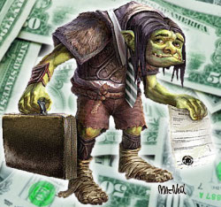

May
Week 5 Cultural Blog - Issues in Tech
When it comes to problems in technology today, you may think of the growing demand of internet bandwidth, the complexity of keeping your information safe and secure, or keeping your company productive but still allowing full usage of the internet at work. But one nasty monster of a problem that lurks in the background until it gained big headlines in 2011 is the spawn of patent trolls and companies that are suing competing companies over patent infringment.
Since 2011, Apple has been in litigation battles with Samsung over dozens of cases such as phone design, on screen navigation, bounce back effects, and tap to zoom. Samsung also came back the same year and counter sue over two wireless patents. Though Apple was awarded a $1.049 billion settlement, this really puts into light how a small company without a lot of financial means can simply get sued over incorporating a design that might be similar to these big companies. Or these small companies have to hand over a large sum of money just get a license to use it. NPR recently reported on the rise of patent trolls and how a company called Intellectual Ventures only job is to take the patents they own and demand money to license these patents.
In definition, patent trolls are basically a person or a company that enforces their patent rights against infringers and attempt to collect licensing fees. The problem with this is that the patent trolls doesn't manufacture products or supply any services based on the patent they hold. Their job is to make money from companies that simply want add features such as scrolling from left to right or to allow a users to create folders on their phone's screen to keep your apps organized. Imagine if you're a programmer and over half the functionality of your software requires a license to use and you might have to pay royalties for every person that downloads your software. Having this worry over your shoulder will make you think twice about building some new application. And if your application becomes successful, everyone wants a piece of the pie and you are suddenly bombarded with lawsuits. Protecting intellectual property is now actually hurting innovation.
So what can we do about this? From what I read about patents, patents filed from 1995 onward has a life span of 20 years. If you were Apple and you created the single home button below on your phone, your patent protects your design for up to 20 years. Though I understand that there is a lot of reseach and development that goes into making a button for the home screen, or to tap on your screen to zoom, we are in a world where money rules, companies wants big profits, and stomping out your competition is key to the growth of the company. Having patents with such a long expiration date only benefits the company and no one else. With technology changing at such a fast rate, why not shorten the life span of patents. Make the technology patent last for say 5 years, or less. If we do not stop all these patent wars, the greed of these companies and trolls will deter us from building the next technology that might save us from global food and water shortage, create more efficient solar power, or build mobile device that can monitor our health.
Resources
When Patents Attack - NPR
The Problem with Patents - TechRepublic
Wikipedia - Term of patent in the US
Apple vs Samsung Patent Wars